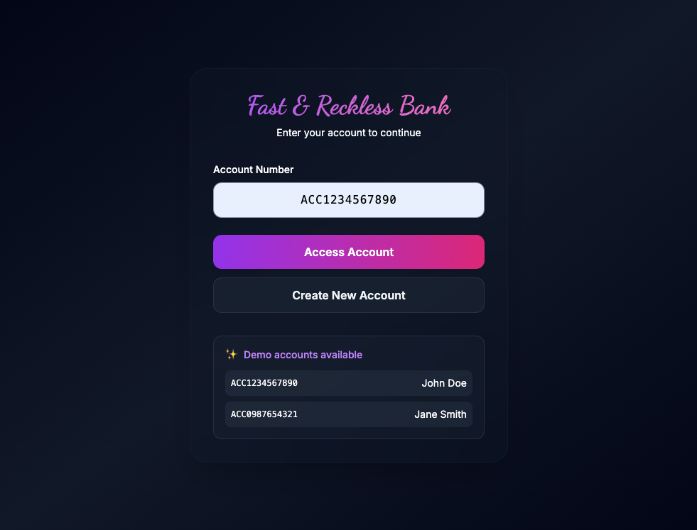
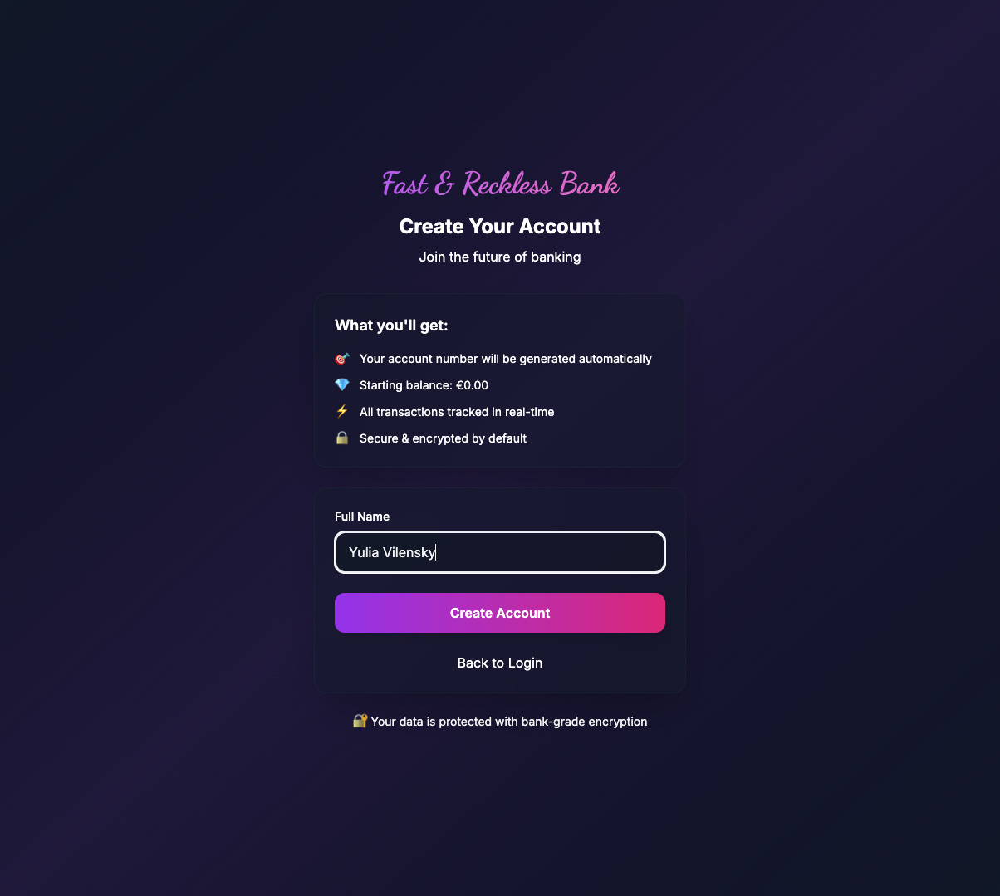
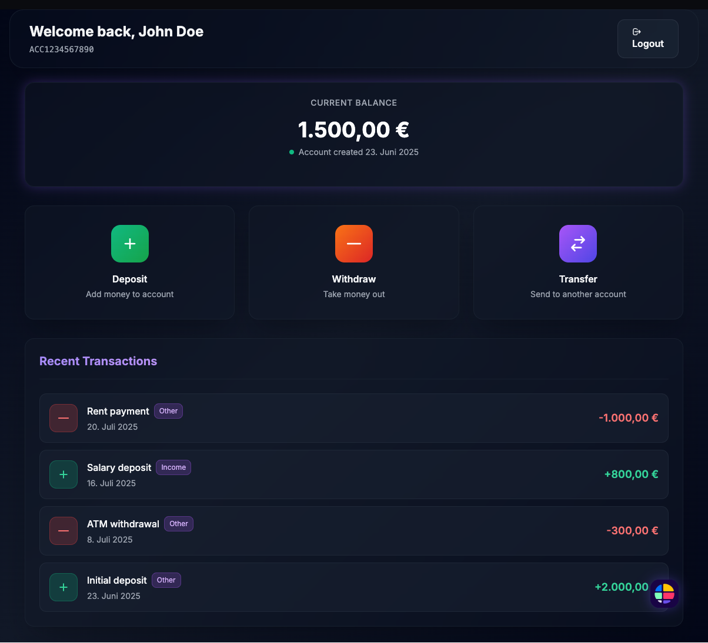
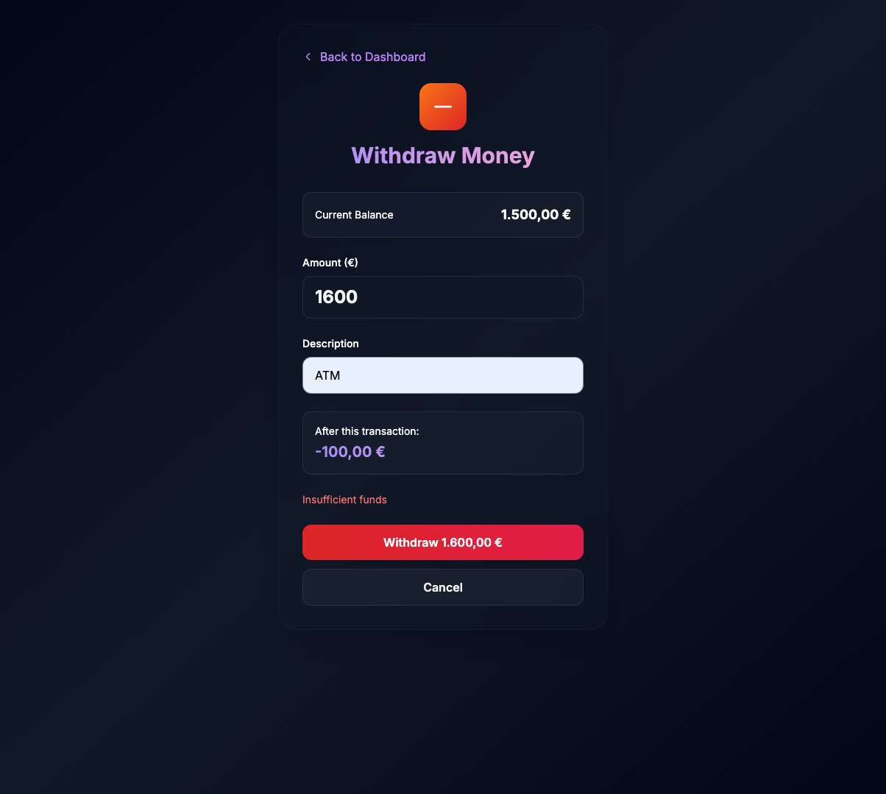

Strategic AI Integration in Design Leadership – Demonstrating how AI tools can transform design workflows, accelerate prototyping cycles, and enable data-driven design decisions at scale.
This project demonstrates strategic AI integration in product design leadership through complete system architecture and full-stack implementation. Originally developed as a technical assignment, it showcases how modern AI tools can fundamentally transform design processes, accelerate team productivity, and enable data-driven decision making. As a comprehensive case study for design leadership at scale, it explores the intersection of hands-on design execution, technical architecture decisions, cross-functional collaboration, and AI-powered innovation in fintech UX.
Lead AI integration in design workflows while architecting and implementing a complete full-stack banking application that maintains exceptional UX standards.
Demonstrate hands-on design execution combined with strategic thinking and technical architecture, using AI as a force multiplier for rapid prototyping and user-centered solutions.
Achieved 60% faster design-to-prototype cycles while establishing reusable AI-powered design methodologies and complete system architecture for team scalability.

Led the strategic integration of AI tools across the entire design process – from initial concept through final implementation. Used Claude AI as a design consultant for architectural decisions and UX guidance, demonstrating how AI can amplify design leadership capabilities while maintaining creative control and design quality standards.

Architected and implemented a complete full-stack banking application from system design through deployment. Designed thread-safe architecture using ConcurrentHashMap for concurrent access, implemented proper separation of concerns (Controller → Service → Repository layers), and established comprehensive testing strategy with 36 unit tests. This technical assignment demonstrates ability to lead both design vision and technical execution while maintaining production-ready standards.

Designed comprehensive user journey mapping covering 9 distinct screen states including error scenarios. Applied systems-oriented thinking to create scalable design patterns while maintaining attention to execution detail. Established industry-standard fintech UX patterns with clear accessibility considerations – demonstrating ability to balance strategic vision with hands-on execution quality.

Architected intelligent features that showcase forward-thinking design methodology: smart transaction categorization with asynchronous processing and planned OpenAI integration for personalized insights. Designed with proper error handling, fallback mechanisms, and non-blocking user experience – demonstrating ability to push boundaries of what's possible while maintaining user-first design principles.
Accelerated design-to-functional-prototype cycles through strategic AI integration
Comprehensive journey mapping including error states and accessibility considerations
Complete technical implementation from system design through production-ready deployment architecture
This project demonstrates that strategic AI integration in design leadership isn't about replacing human creativity – it's about amplifying design capability and enabling teams to focus on high-impact strategic thinking. By treating AI as a collaborative partner in the design process, leaders can accelerate iteration cycles, validate design decisions with data, and maintain exceptional quality standards while fostering a culture of innovation and continuous learning within design teams.